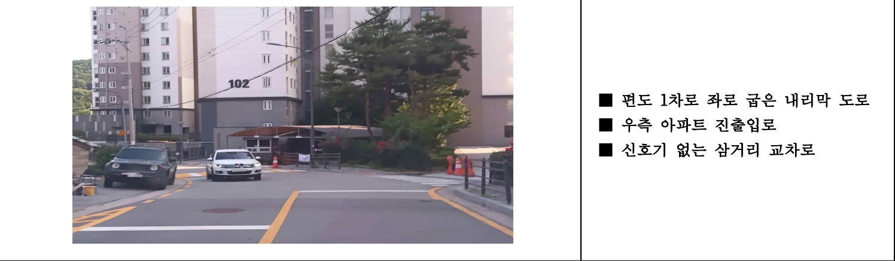

695. 在下列情况下，最安全的两种驾驶方法是？

- ①行驶方向的前方没有车辆，因此快速行驶。
- ②左转下坡路难以确认前方状况，因此应提前减速驶入交叉路口。
- ③可能会有车辆从公寓驶入道路，因此应作好准备应对这种情况。
- ④对面车辆准备左转时，因为直行车辆无条件优先，因此应鸣笛警告并行驶。
- ⑤公寓进出道路行人通行较为频繁，但视野不佳，因此应鸣笛并加速快速行驶。
查看答案
答案
② 左转下坡路难以确认前方状况，因此应提前减速驶入交叉路口。
③ 可能会有车辆从公寓驶入道路，因此应作好准备应对这种情况。
依据
因为在向左弯曲的道路上很难确认前方的情况，所以缓慢接近比较安全。在没有信号灯的十字路口，直行的车辆不一定有优先权，最好是缓慢行驶并检查安全，而不是按喇叭，以防有车辆或行人从公寓出来上路。
依据文字为学习用机器翻译。